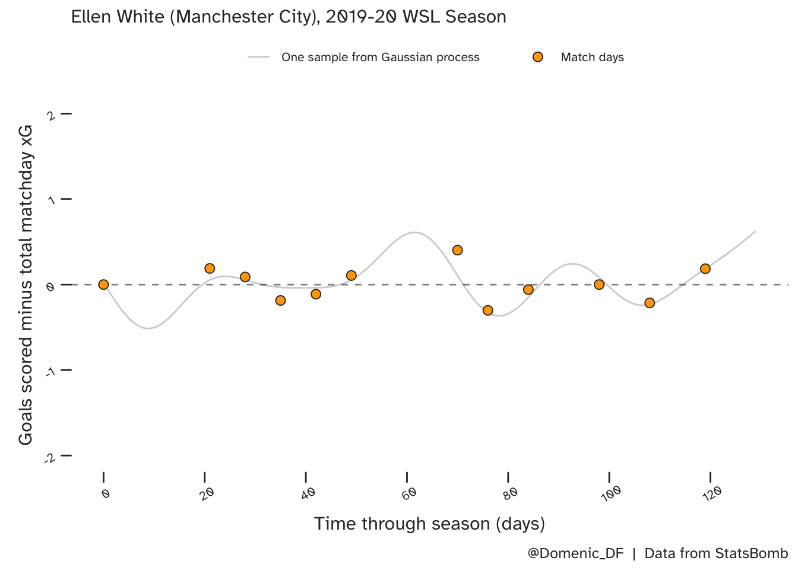
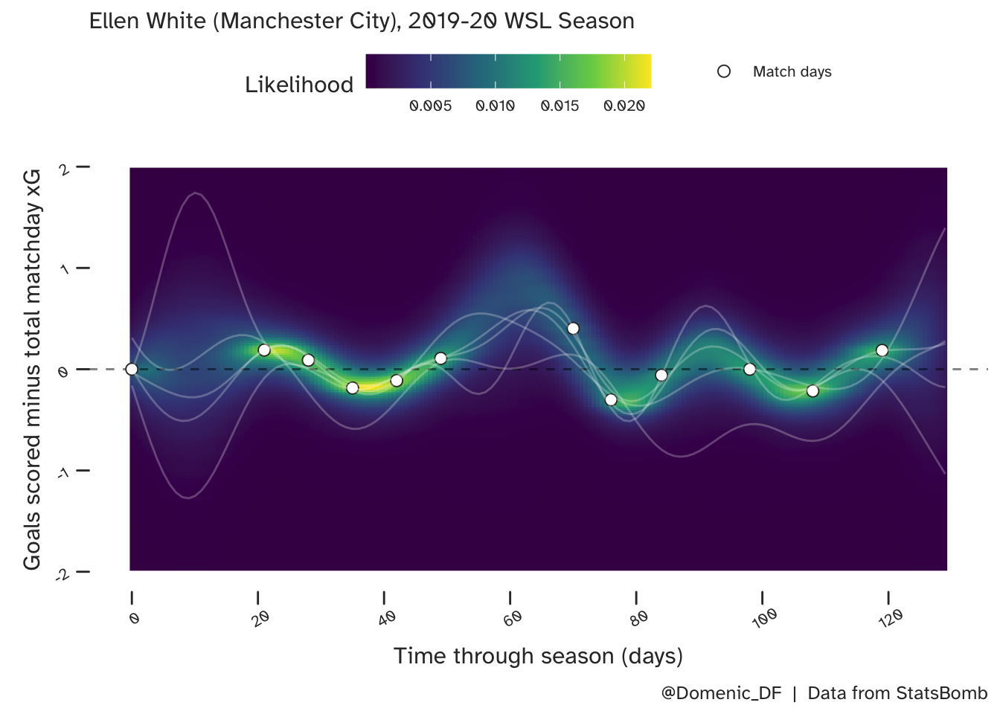

TLDR
When is a player in form (over performing, or enjoying a hot streak) and how long does this last? If there is such an effect, I suspect it will be a result of some complicated system of personal circumstances. In this post I suggest a popular statistical model (Gaussian process) for approximating the dependencies (how many games back should we look?) and non-linearities (rise and fall of form) that we need. Again, I am suggesting that we should care about uncertainty when trying to model just about anything in football, and using probability is a helpful way of doing so.
Ellen White’s data from the 2019-20 WSL season (courtesy of StatsBomb) is used as an example.
Similarly to the posts on multi-level models, this will also be split into 2 parts. Part 1 (here) will focus on the features of a Gaussian process that are well suited to approximating player form. Part 2 (in preparation) will include more technical details and more code.
A (Questionable) Measure of Player Form
As I alluded to in the TLDR above, I suspect a players form is somehow linked to their current mental state. When they are feeling confident they may be less likely to doubt their abilities, and more decisive. This could mean they act quicker and become more difficult to play against.

I will not propose a detailed causal model here, just a statistical proxy. But, I will be assuming that form can rise and decay over time. For some players even a single good or bad performance may be enough to drastically impact their next game, and for others this process may be smoother and less volatile. More on this later.
For the purposes of this post, goalscoring form on a given match day, \(i\), is defined as the difference between the number of goals that were scored on that match day, minus the expected number of goals, \(xG\) associated with the opportunities in that game.
\[ Form_{[i]} = Goals_{[i]} - xG_{[i]} \]
A nice feature of this is that, in principle, it is invariant to the quality of opposition. A striker may have a higher xG when performing against a weaker team, but will therefore need to score more goals in such a game to be considered in the same form. By the same token, it should also account for the fact that a player will generally get fewer scoring opportunities as a substitute.
…As for the not so nice features, there are plenty! For instance, what good is a measure of form that only considers goals scored? Is xG not also conditional on how well a striker is paying? Would it be more useful to standardise the result?
These are all fair questions, and with a little thought could all be integrated into a more comprehensive characterisation. However, the type of model that I will introduce will be equally compatible with alternative definitions, so let’s imagine we just care about whether a striker is scoring as many goals as they should be, and whether this will continue.
Ellen White
Ellen White is a clinical striker who, at the time of writing this, plays for Manchester City and England. She is a former winner of the Women’s Super League (WSL) golden boot, and is England’s all-time top scorer. So plenty of opportunities to see her distinctive celebration:

StatsBomb have kindly made data from the WSL (2019/20 season) freely available in their R package, and so we will consider this league season of Ellen White’s career here.
Here is a plot of Ellen’s form (performance vs. xG) over the 12 league games that she featured in, during that season. Her biggest over performance vs. xG was when she scored in a 4-1 win away at Tottenham despite a cumulative xG of 0.597. Her worst performance by the same measure was the following week, failing to score in the 3-1 win at home to Everton. Although she only played the final \(25\) minutes of this game, she accrued a match xG of 0.302. The fact that these games were back to back could be tricky for a form model to accommodate!
What would such a model need to do?
Essentially, we are looking for are some numbers to help us understand the following:
- What form is a player currently in?
- How long will a player remain in good (or bad) form?
- What is the uncertainty in our predictions?
Since players can enter good and bad patches of form over the course of a season, we need a model that is able to twist and turn accordingly. This means we need some non-linearity.
We also want future predictions to be based on recent games - if a player has over performed for the last 3 games in a row, then we generally expect them to continue on this path, at least in the short-term. But how far back should we look? Does a single great performance from \(3\) months ago have any impact on a players current form? We need to quantify this dependency in our model too.
Finally, a probabilistic model has the benefit of quantifying uncertainty. I emphasise the importance of this in the ‘final thoughts’ at the end of this post and for anyone interested, here is more Bayesian statistics propaganda. But, in summary we should not neglect uncertainty in this model because (a) We are not even sure what form is, and (b) we are estimating it from a small amount of indirect observations. So let’s not pretend we will end up with a single number. Enough preaching and back to the task at hand….
One solution that checks the above requirements is the Gaussian Process (GP).
What does it look like?
So we have this probabilistic model of smooth, non-linear functions. Let’s see what it looks like. In the below plot, the match days are the same as those presented in the above plot, we just have a new y-axis scale, and we have ‘days’ (rather than date) along the x-axis.
There are multiple functions that are consistent with Ellen White’s form in the league that season, so let’s look at one example first:

Where there is a large gap between successive games (such as the 3 weeks between White’s first and second appearances of the season), there is less evidence to guide predictions of form. This is also true for the period around day 60 (late December). Here though, she was on an upward trajectory. In both cases, this lack of data results in higher uncertainty, as is apparent when we look at more samples, which are shown on top of the full predictive distribution below.

And, so what?
Some squiggly lines that approximately go through some points? What is the value of this when you could scribble something similar without knowing anything about statistics?
Well, underlying all of these lines is a model of dependency. We have quantified how similar (correlated) form should be in successive games, and how this correlation will decrease with time. I will talk about the parameters that do this and how they can be interpreted in part 2 (in preparation), but to summarise, the model quantifies how correlation in form decreases as time progresses and this can be seen in the smoothness of the lines.
For example, if form was always shown to be very similar to that of the previous game, then transitioning from good to bad performances would be gradual, and the samples from the associated GP model would be very smooth. Conversely, in the case where performance in subsequent games were completely independent, even if very little time had passed, the GP regression lines would need to be able to change direction very sharply.
Below are some predictions from the model in the period just after White’s last game of the season (to the right of the final match day on the above plots). She appeared to be on a slight upward trend at this point, over performing in her final game at home to Chelsea. This is shown in the uppermost histogram. As we move away from this game, into the off-season, we see the uncertainty gradually increase in our predictions and the average move towards zero. This is consistent with the considerations discussed above.
Some final thoughts…
Uncertainty
Any football models we propose will only vaguely resemble the ‘true’ data generating process and though we can incrementally add more parameters we do not automatically find more evidence for them. We can build big datasets by combining observations from multiple players, and leagues, but ignoring possible variation between such data is misleading. If your big football models need big data, why stop there? Feed it some Sunday league football, or some basketball, or some handwritten digits.
Alternatively, we acknowledge that our system of parameters are not perfectly precise, and our predictions will span credible ranges. Quantifying this variability is a strength, not a weakness of our models, and is actually of more direct use in decision support.

Sources of Information
What can we do about long periods in time where no competitive games are taking place?
There may be other sources of information that could help, such as performances in other competitions or even in training. Given we are not sure of the extent that these should inform the model, there is an argument to use a multi-level (partial pooling) structure, as was used to improve player-specifc xG estimates.
Finally, the other source of information is that contained in the priors, which I have not included here. But don’t panic, some prior predictive sampling is on the way in part 2 (in preparation).
Citation
BibTeX citation:
@online{di_francesco2023,
author = {Di Francesco, Domenic},
title = {Player {Form.} {Part} 1},
date = {2023-01-19},
url = {https://allyourbayes.com/posts/player_form/},
langid = {en}
}
For attribution, please cite this work as:
Di Francesco, Domenic. 2023. “Player Form. Part 1.” January
19, 2023. https://allyourbayes.com/posts/player_form/.